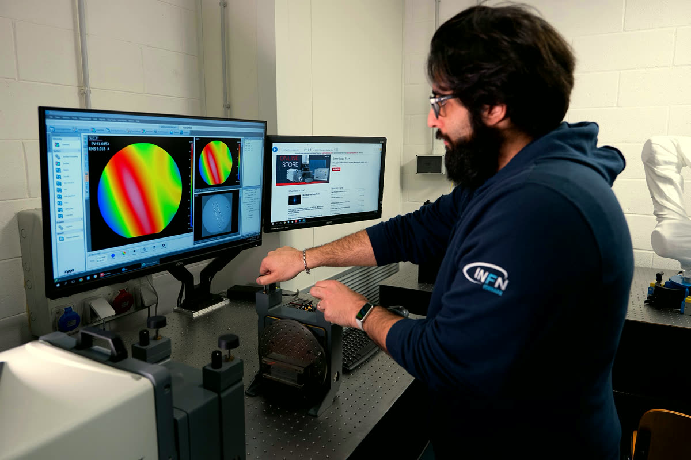
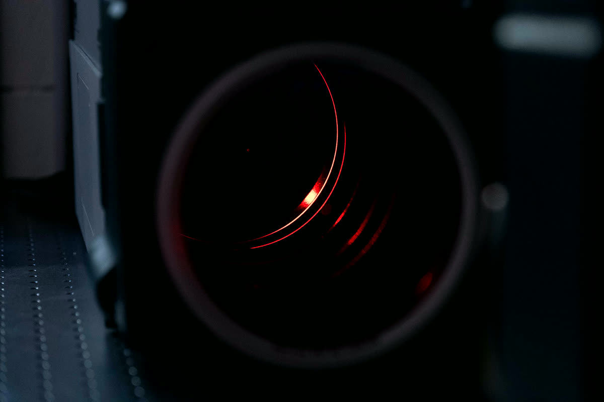

Equipment › Measure
Zygo Verifire HDX
Fizeau laser interferometer
Form and flatness of optics and crystals, resolved to a fraction of a nanometre.
Work with us on this instrument
What it does
A Fizeau interferometer compares the surface under test with a reference surface of known shape. A stabilised helium-neon laser lights both; the two reflections interfere and draw fringes on the camera, contour lines of the gap between the surfaces, about a third of a micron apart in height.
The Verifire HDX shifts the phase in steps while a high-resolution camera records the fringes, then computes the height of every point of the surface at once, with sub-nanometre resolution. A dedicated acquisition mode (QPSI) keeps the measurement reliable when the room is not free of vibration.
From one map we read flatness, curvature and radius, form error and local defects of optics, wafers and bent crystals. We also measure mechanical parts while they are clamped or loaded, to see how a holder deforms the crystal it carries.
What we use it for
Curvature of bent crystals
Radius and torsion of bent crystals for the LHC and for Laue lenses, measured on the crystal itself.
Flatness of polished parts
Wafers, reference flats and substrates, checked between polishing steps.
Substrates for bonded optics
The form of the curved substrates that give bonded X-ray optics their shape.
Holders and mechanics
Shape and deformation of crystal holders as they are assembled and loaded.
Working with us
Send us optics, wafers or bent crystals to measure, or come to Ferrara and measure them with us.

